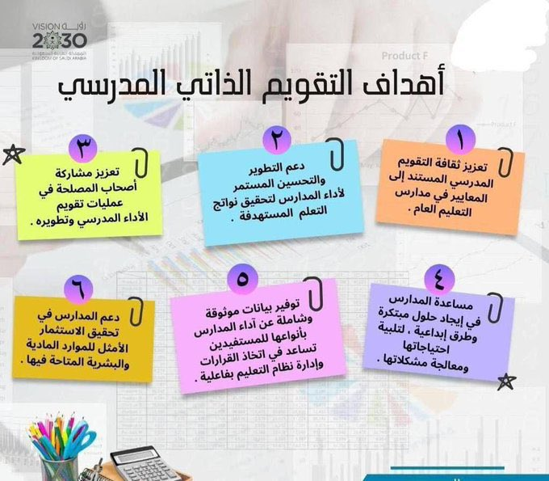
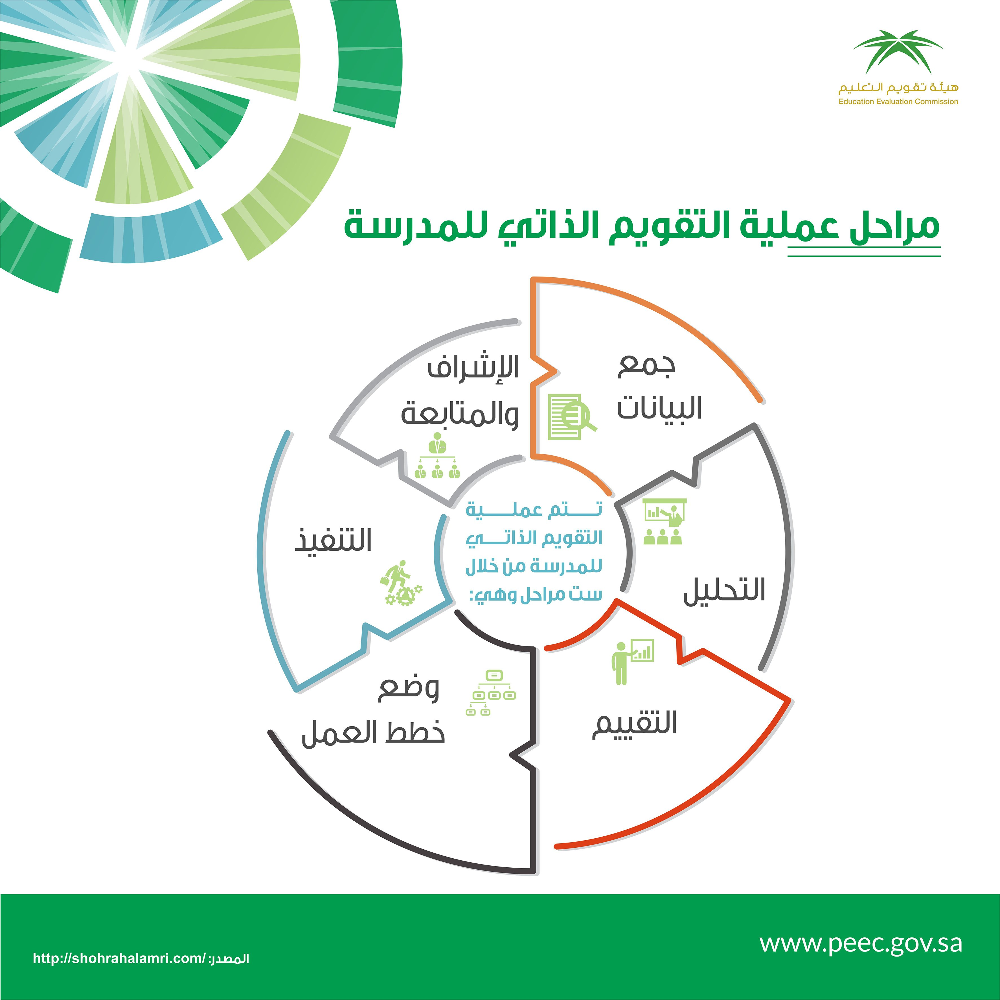

مقطع مرئي تعريفي
التقويم المدرسي
التقويم المدرسي : عملية تشخيصية تتضمن جمع معلومات بطريقة منتظمة ومستمرة حول أداء المدارس، وتحديد جوانب القوة وفرص التحسين في أدائها، وإصدار أحكام حول جهودها التطويرية من حيث فاعليتها، وكفاءتها، وأثرها، واستدامتها، وذلك في ضوء معايير التقويم والتميز المدرسي المعتمدة من الهيئة.

